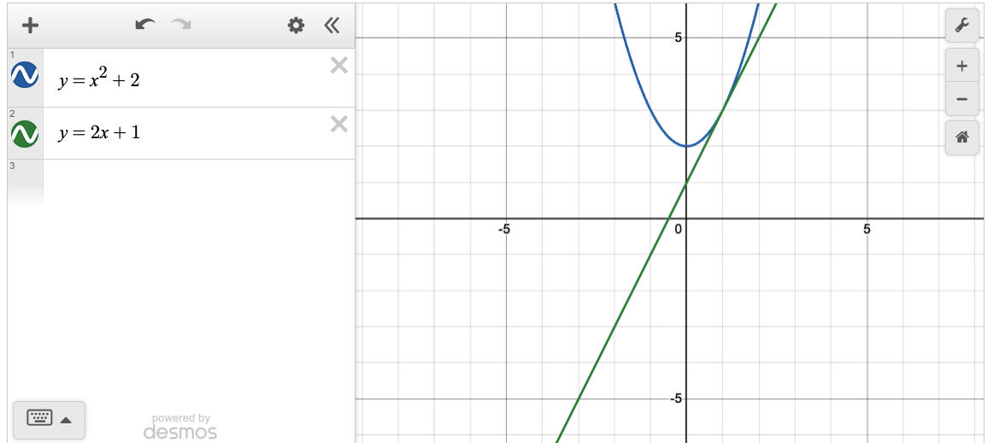
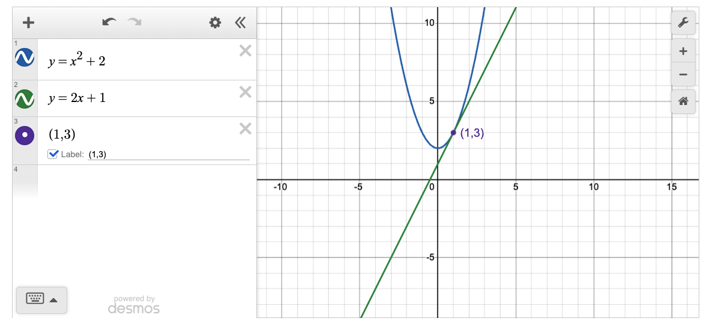
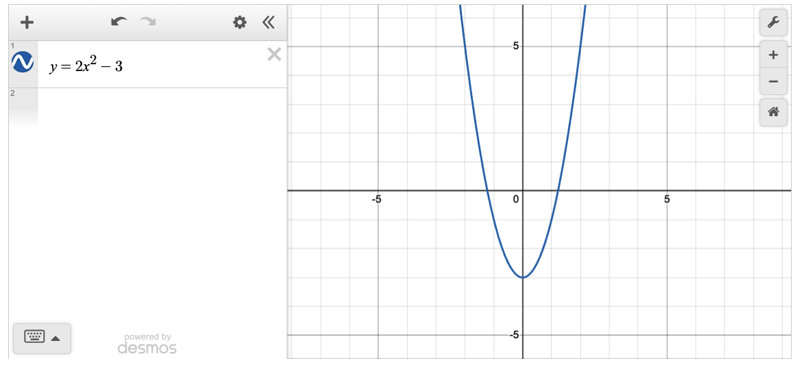

Using Desmos Graphs in Jupyter Notebooks
I recently finished Calculus I as the World’s Oldest Math Major. In class and on exams, I had the pleasure of competing with people a third my age in hunting and pecking on a TI-84 calculator.
In contrast, at home, I only spent as much time as I needed on that device to do well on exams. Instead, my preferred tools for calculation and graphing were a Python stack consisting of an open IPython terminal with SymPy installed and a browser opened to the Desmos calculator for graphing.
I didn’t stay within the Python ecosystem for graphing because, as powerful as tools like Matplotlib and Seaborn are, doing interactive mathematical graphing in them tends to require a fair amount of setup. For example, spinning up a quick graph to check a result I calculated by hand would probably take me five times as long as it would in Desmos. (If I did it all the time, I could probably cut that down to three times as long, but that’s still not great.)
SymPy’s plotting package alleviated some of this, making it simpler in principle to plot SymPy objects in Python, but, as I discussed in the article Using SymPy for plotting Geometry, there were some missing features and quality issues in this library that made it less than ideal. Moreover, even when setting those aside, the results were still not the sort of interactive math graphing experience that Desmos provides.
Going back and forth between SymPy and Desmos was not a problem in practice while taking the course. Just keep a terminal window and a browser window open and then switch between them. However, given my past life as a software developer, I wondered how easy it would be to integrate them. This article discusses what I discovered, and a new library that makes it much easier to work with.
Desmos and its API
My first step was to learn about the Desmos API. Not surprisingly for a graphic calculator tool that runs in a web browser, the authors published the API in JavaScript. Since SymPy and my other favorite non-graphics tools run in Python, I first researched how to run JavaScript from a Jupyter code cell written in Python. I briefly tried one of the tools that came up early in the search results, the NotebookJS library. At first, this didn’t work, and once I’d convinced myself that I was running it correctly, I decided that given the lack of recent updates, this probably wasn’t the best choice. (In fairness to the author, this could be a platform-specific thing – not all Python libraries work without more wrangling on an Apple Silicon Python environment).
Using the IPython.display.Javascript class
Fortunately, I found that Jupyter itself provided an answer to the question in the form of a class in IPython’s display package, IPython.display.Javascript, and I reasoned that even if this approach might be less full-featured, it was probably better tested against all the lastest Jupyter releases.
This constructor (i.e., the __init__ method) of this Javascript class takes a script as input along with a list of libraries to load prior to running the script. It returns an object that can be passed to the display method to output the results of evaluating the JavaScript.
Given this information and the Desmos API samples, it was a pretty easy task to display a Desmos graph. The code for my first pass at doing this is below, which we’ll discuss in the graph below. (Note that if you’re viewing this on CodeSolid.com, the images are actually screen-shots of the Desmos graph displayed, not how it will appear in Jupyter. This is because the sphinx plugin the web site uses doesn’t handle JavaScript (at least not automatically. To see the actual JDesmos graph, you can, for example, run the Jupyter Notebook version of this article).
from IPython.display import Javascript, display
# Write the JavaScript
script = """
// Important, need to reset height or the graph will not be visible.
element.style.height = "480px";
// Create the Desmos calculator object
var calculator = Desmos.GraphingCalculator(element);
// Do a "Calculus 1" friendly example, a curve and a tangent line through a point.
calculator.setExpression({id:'exp1', latex: 'y=x^2 + 2'});
calculator.setExpression({id:'exp2', latex: 'y=2x + 1'});
"""
# This uses the demo API key for now
api_url = "https://www.desmos.com/api/v1.9/calculator.js?apiKey=dcb31709b452b1cf9dc26972add0fda6"
# Create the Javascript object in Python and display it.
js = Javascript(script, lib=[api_url])
display(js)

Discussion: First Attempt
Well, this code is fine as a demo and it works OK, but we can take note of a few limitations it has. First, there’s a fair amount of JavaScript “boilerplate” here, which a) would have to be repeated every time and b) is not something a Python developer should have to care about. It’s fine that I learned the window height needs to be set to make this work, but we can set up overridable defaults for this and for the API key since others may want to use a non-demo key in production.
So I decided to wrap this code in a small library to make it easier for myself and other Python developers, the result is jdesmos. This is an extremely early release. It still needs more documentation, demos, etc. We’ll make improvements soon, but meantime, it’s available on PyPi if you want to kick the tires:
%pip install --quiet jdesmos
[notice] A new release of pip is available: 25.0.1 -> 25.3
[notice] To update, run: pip install --upgrade pip
Note: you may need to restart the kernel to use updated packages.
Once you have it installed, you can easily import it and create a Desmos object, as shown below.
What’s supported so far is the expression syntax (not tables) for GraphingCalculator.setExpression. There are two Python wrappers, add_latex, which takes a LaTeX expression that corresponds to what you’d type in Desmos, or add_expression, which is more flexible and allows you to set up a complete expression as a Python dictionary. See the Desmos API documentation for what other keys are supported by the JSON that corresponds to this Python dictionary.
Below is a brief demo that shows how easy it is to use both methods. We’ll take an extremely typical Calculus I task, plotting a tangent line to the graph of a curve at a given point.
from jdesmos import Desmos
desmos = Desmos()
desmos.add_latex('y=x^2 + 2')
desmos.add_latex('y=2x + 1')
desmos.add_expression({"latex": "(1,3)", "label": "(1,3)", "showLabel": True})
desmos.display()

Again, once you’re done coding the Python part, you can easily use the Desmos UI now from within Jupyter to add more information to the graph or experiment with different choices. Simply interact with it as you would with the Desmos calculator.
One limitation of the library so far is that there’s no support yet for saving such Graphs back to Desmos, but of course, you can save everything in the Jupyter Notebook as you normally would.
Using Desmos with SymPy
I’m excited by the prospects of using the add_latex method in JDesmos, because it offers a simple way to integrate with SymPy, which has great support for latex. To show how simply this can be done, let’s set up a SymPy equation for the function \(y = 2 x^{2} - 3\), and display it in JDesmos.
from sympy import symbols, Eq, latex
x, y = symbols("x y")
eq = Eq(y, 2* x**2 - 3)
latex(eq)
desmos = Desmos()
desmos.add_latex(latex(eq))
desmos.display()
